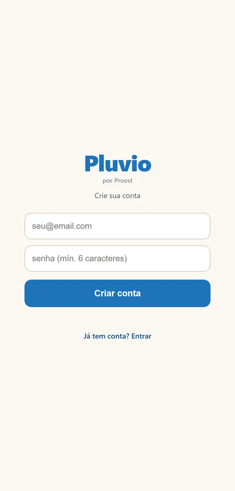

Como instalar
Escolha o seu celular. Depois de instalar, crie sua conta (passo 3).
1. iPhone
- No iPhone, toque em Baixar na App Store. No computador, aponte a câmera do iPhone para o código da página inicial.
- Na App Store, toque em Obter e confirme com o rosto, o dedo ou a senha do iPhone.
- O ícone do Pluvio aparece na tela do celular. Toque para abrir.
As atualizações chegam sozinhas pela App Store, como em qualquer app.
2. Android
No Android, o Pluvio é instalado por arquivo (APK), direto deste site. Não precisa da Play Store.
- No celular, toque em Baixar para Android (versão 1.2, 5,6 MB).
- Quando terminar, toque no arquivo Pluvio.apk (na notificação ou na pasta Downloads).
- Se aparecer um aviso de segurança, toque em Configurações, ligue "Permitir desta fonte" e volte.
- Toque em Instalar. Se aparecer o aviso do Play Protect, toque em "Instalar mesmo assim".
- Pronto: o ícone do Pluvio aparece na tela do celular.
O passo de "permitir desta fonte" só acontece na primeira vez.
Atualizar no Android
Quando sair versão nova (veja em Novidades), baixe o arquivo de novo por este site e toque em Instalar. Ele instala por cima: nenhum dado é perdido. Para ver a sua versão: Menu, no rodapé da tela.
3. Criar sua conta (primeira vez)
- Abra o Pluvio.
- Toque em "Não tem conta? Criar conta".
- Digite o seu e-mail e uma senha que você escolhe (pelo menos 6 letras ou números).
- Toque em Criar conta. Você já entra direto.
A conta é sua. Não existe login compartilhado: cada pessoa cria a própria conta. Seus dados de chuva ficam só com você.
Foi convidado por um produtor? Crie a conta com o mesmo e-mail que ele usou no convite. A fazenda aparece sozinha. Veja Pluvio com colaboradores.
Confira o e-mail antes de criar a conta: um erro de digitação (como ".con" no lugar de ".com") impede que o convite de colaborador encontre você.

4. Entrar em outro celular
Instale o Pluvio no aparelho novo e toque em Entrar com o mesmo e-mail e senha. Todos os seus dados voltam da nuvem.
Depois de instalar, veja como usar o Pluvio.